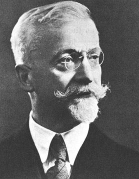

這份筆記是關於嘉當-迪奧多內定理的證明。
嘉當-迪奧多內定理
定義 1：雙曲二次空間 (Hyperbolic Quadratic Space)
若二次空間\(V\)是一串雙曲平面的正交直和，則稱\(V\)是雙曲二次空間。
引理 2
給定雙曲二次空間\((V,H)\)，並給定\(\sigma\in O(V)\)，並令\(M\)是\(V\)中維度最大的完全同向子空間(即沒有任何完全同向子空間的維度會大於\(\dim M\))，且\(\sigma\)在\(M\)上是等價映射(即\(\sigma|_M=\mbox{id}|_M\))，則\(\det(\sigma)=1\)。
證明：由於\(M\)是完全同向的，故由這裡的定理4知存在某個完全同向的子空間\(N\)使得\(M\oplus
N\)是一串雙曲平面的直和，且\(\dim
M=\dim N\)。令\(\dim
M=r\)，則由於\(V\)是雙曲二次空間且\(M\)是維度最大的完全同向子空間，故\(\dim V=2r\)。
而對於所有\(x\in M, y\in N\)，有 \[
\begin{aligned}
H(x,\sigma y-y)&=H(x,\sigma y)-H(x,y)\\
&=H(x,\sigma y)-H(\sigma x,\sigma y)\;\;(\sigma\mbox{是等距同構})\\
&=H(x,\sigma y)-H(x,\sigma
y)\;\;(\sigma\mbox{在}M\mbox{上是等價映射})\\
&=0
\end{aligned}
\] 故\(\sigma y-y\in
M^\perp\)。又因為\(M\)是完全同向的，故\(M\subseteq M^\perp\)，但 \[
\underbrace{\dim M}_{r}+\dim M^\perp=\underbrace{\dim V}_{2r}
\] 即\(\dim M=\dim
M^\perp=r\)。故\(M=M^\perp\)。
於是，有\(\sigma y-y\in M,\forall y\in N\)。令\(\{x_1,x_2,\cdots,x_r\}\)為\(M\)的基底，\(\{y_1,y_2,\cdots,y_r\}\)為\(N\)的基底，\(\beta=\{x_1,x_2,\cdots,x_r,y_1,y_2,\cdots,y_r\}\)為\(V\)的基底，則 \[
[\sigma]_\beta=\left(
\begin{array}{c|c}
I_r & \ast\\
\hline
0 & I_r
\end{array}
\right)
\] 其中\(\ast\)是某個不重要的區塊矩陣，上述矩陣的右邊長這樣是因為\(\sigma y=y+\)某個\(M\)中的東西。於是有 \[
\det(\sigma)=\det[\sigma]_\beta=1
\] QED
定理 3：嘉當-迪奧多內定理 (Cartan-Dieudonné Theorem)
給定非退化二次空間\((V,H)\)，其中\(\dim V=n\)，則\(O(V)\)中的每個元素都能被表為至多\(n\)個鏡射的合成。
證明這個定理之前，需要再有一個引理。
引理 3-1
給定非退化二次空間\((V,H)\)，其中\(\dim V=n\)，並給定\(\sigma\in O(V)\)，若對於所有非同向的\(x\in V\)都有\(\sigma x-x\neq 0\)且\(\sigma x-x\)同向，則\(n\geq 4\)，\(n\)為偶數，且\(\det(\sigma)=1\)。
證明：我們分成三個部分證明這個引理。
1. 若\(n=1\)，則\(O(V)=\{\pm\mbox{id}\}\)。若\(\sigma=+\mbox{id}\)，則\(\sigma x-x=0\)。若\(\sigma=-\mbox{id}\)，則 \[
\sigma x-x=-2x
\] 由於\(x\)不是同向的，故\(-2x\)也不是同向的(如果\(\mbox{char}(\mathbb{F})=2\)，則\(\sigma x-x\)=0)。可以發現\(\pm\mbox{id}\)都不滿足條件，故\(n\neq 1\)。
2. 若\(n=2\)，由於\(V\)是非退化的，故存在非同向的\(x\in V\)。若\(\sigma x-x\neq 0\)是同向的，則\(Q(\sigma x-x)=0\;\mbox{(★)}\)，即\(H(\sigma x-x,\sigma x-x)=0\)。展開整理可得
\[
2(H(x,x)-H(\sigma x,x))=0
\] 即 \[
Q(x)=H(x,x)=H(\sigma x,x)
\] 若\(\sigma
x-x=cx\)，其中\(c\neq
0\)，則由(★)有 \[
Q(\sigma x-x)=c^2Q(x)=0
\] 這導致\(Q(x)=0\)，這與\(x\)非同向的假設矛盾，故不能假設\(\sigma x-x=cx\)。
於是，我們知道\(\beta=\{x,\sigma
x\}\)是線性獨立的，且由於\(\dim
V=2\)，\(\beta\)是\(V\)的基底。則有 \[
[H]_\beta=\left(
\begin{array}{cc}
Q(x) & H(x,\sigma x)=Q(x)\\
H(\sigma x,x)=Q(x) & H(\sigma x,\sigma x)=Q(x)
\end{array}
\right)
\] 可以發現\(\det[H]_\beta=0\)。這與\((V,H)\)非退化的假設矛盾，故\(n\neq 2\)。
3. 對於\(n\geq 3\)，由條件知對於所有非同向的\(x\in V\)有\(Q(\sigma
x-x)=0\)。我們希望說明對於同向的\(y\in
V\)也有\(Q(\sigma y-y)=0\)。由這裡的定理4知存在某個包含\(y\)的雙曲平面\(\mathbb{H}\)。令 \[
V=\mathbb{H}\oplus U
\] 由於\(\dim V\geq 3\)，故\(\dim U\geq 1\)。可以找到向量\(z\in U\)滿足\(Q(z)=\lambda z\neq 0\)(即\(z\)是使\(U\)對角化的其中一個向量)。然而由二次空間直和的定義知\(H(y,z)=0\)，故對於\(\epsilon\neq 0\)有 \[
Q(y+\epsilon
z)=\underbrace{Q(y)}_{=0}+2\epsilon\underbrace{H(y,z)}_{=0}+\epsilon^2\underbrace{Q(z)}_{\neq
0}\neq 0
\] 即\(y+\epsilon
z\)是非同向的，故由假設應有 \[
Q(\sigma(y+\epsilon z)-(y+\epsilon z))=0\;\;\mbox{(☆)}
\] 且由於\(z\)也是非退化的，故也有\(Q(\sigma z-z)=0\)。故由(☆)有 \[
Q(\sigma y-y)+2\epsilon H(\sigma y-y,\sigma
z-z)+\epsilon^2\underbrace{Q(\sigma z-z)}_{=0}=0
\] 帶入\(\epsilon=\pm
1\)整理(這裡都假設\(\mbox{char}(F)\neq
2\)，故\(\\+1\neq
-1\))，可以得到\(Q(\sigma
y-y)=0\)。故有 \[
Q(\sigma y-y)=0,\forall y\in V\;\;\mbox{(✪)}
\] 接著，令\(W=R(\sigma-\mbox{id})\)(即\(\sigma-\mbox{id}\)的像)。由(✪)知\(Q|_W=0\)，故有\(H|_W=0\)。對於所有\(x\in V, y\in W^\perp\)，有 \[
\begin{aligned}
H(x,\sigma y-y)&=H(\sigma x,\sigma y-y)-H(\underbrace{\sigma
x-x}_{\in W},\underbrace{\sigma y-y}_{\in W})\\
&=H(\sigma x,\sigma y-y)\\
&=H(\sigma x,\sigma y)-H(\sigma x,y)\\
&=H(x,y)-H(\sigma x,y)\\
&=-H(\underbrace{\sigma x-x}_{\in W},\underbrace{y}_{\in W^\perp})=0
\end{aligned}
\]